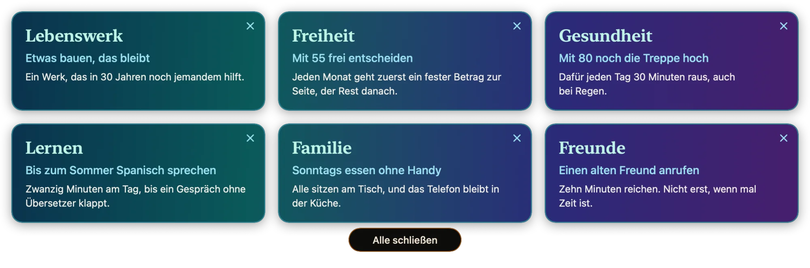
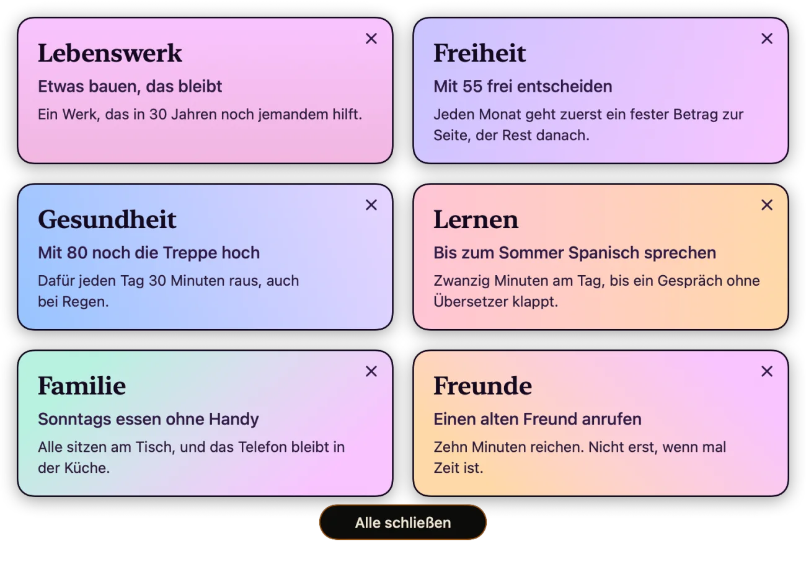
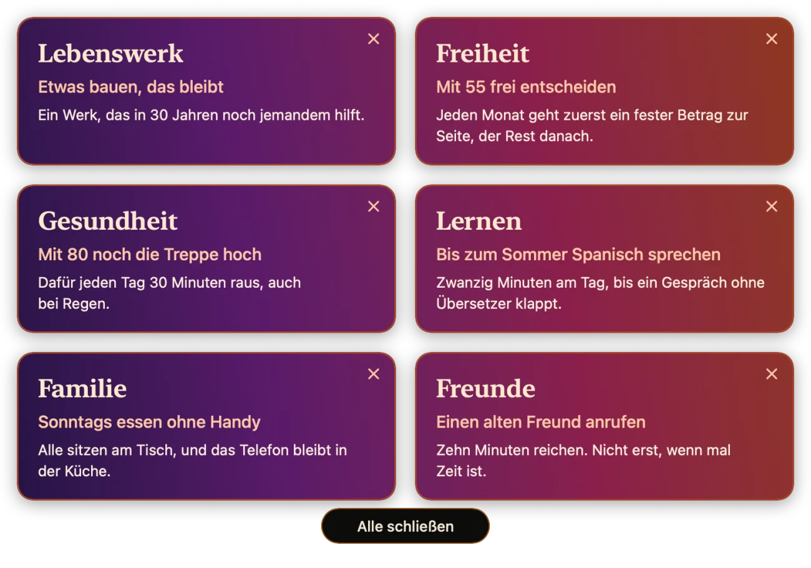
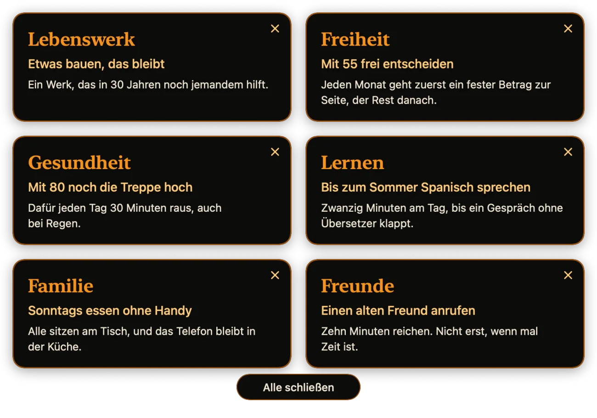
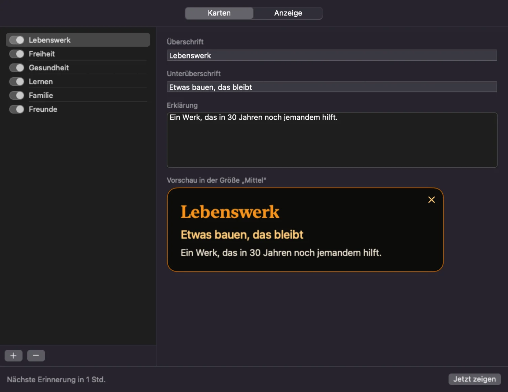

Deine Ziele,
über allem.
Die Goal-App legt deine Ziele im eingestellten Takt als Zielanzeigen über alles, was gerade auf dem Bildschirm läuft. Nach ein paar Sekunden verschwinden die Zielanzeigen von selbst, und dein aktives Programm behält die ganze Zeit den Fokus.
macOS 14 oder neuer · MIT-Lizenz
So werden deine Ziele auf deinem Desktop angezeigt.

Warum das Ganze
Was du nicht siehst, vergisst du.
Warum Ziele wichtig sind
Ein Ziel nimmt dir Entscheidungen ab. Wenn du weißt, wohin du willst, musst du nicht jeden Abend neu abwägen, ob die Überstunde, das Training oder der Anruf gerade vorgeht. Aus vielen kleinen Fragen wird eine: Bringt mich das näher ran? Ziele geben dem Tag auch ein Maß, denn erst an ihnen merkst du, ob eine Woche dich weitergebracht hat oder nur voll war. Und Ziele tragen dich durch die zähen Strecken. Für etwas, das dir wirklich etwas bedeutet, nimmst du Mühe leichter in Kauf.
Wie man Ziele aus den Augen verliert
Kaum jemand streicht ein Ziel bewusst. Es rutscht nach unten. Im Januar steht es groß auf dem Zettel, im März liegt der Zettel unter der Steuer, und im Herbst fällt dir beim Aufräumen wieder ein, was du dir vorgenommen hattest. Dringendes schlägt Wichtiges, jeden Tag aufs Neue: Die Mail will jetzt eine Antwort, das Spanischbuch wartet geduldig. Auch dein Kalender hilft wenig, denn er kennt nur Termine, und ein Ziel hat meistens keinen. Deshalb meldet es sich nie von selbst.
Was passiert, wenn man keine Ziele hat
Dein Tag bleibt trotzdem voll. Dann entscheiden eben andere, was darin vorkommt: der Chef, das Postfach, der Feed, die Erwartungen der Familie. Das fühlt sich lange gar nicht schlecht an, du bist ja beschäftigt. Irgendwann fragst du dich, wo die letzten fünf Jahre geblieben sind, und findest keine Antwort, die dir gefällt. Schlimm muss das nicht sein. Aber dann ist dir dein Leben eher passiert, als dass du es gewählt hättest.
Was die Goal-App kann
Sechs Funktionen der Goal-App.
Die Goal-App ändert daran nur eine Kleinigkeit: Deine Ziele tauchen im Lauf des Tages wieder auf, ein paar Sekunden lang, mitten in der Arbeit. Was du daraus machst, bleibt deine Sache.
Über allem, ohne zu stören
Die Zielanzeigen liegen über allen Fenstern, auch über Programmen im Vollbild. Dein aktives Programm behält den Fokus, du tippst einfach weiter.
Zielanzeigen im Raster
Jede Zielanzeige hat Überschrift, Unterzeile und Erklärung und lässt sich einzeln ein- und ausschalten. Mehrere stehen gemeinsam im Raster, in vier Größen von 360 bis 900 Punkten.
Dein Takt
Alle 1, 15 oder 30 Minuten, alle 1, 2 oder 4 Stunden oder ein eigener Wert bis 24 Stunden. Er zählt ab dem Verschwinden der Zielanzeigen und streut auf Wunsch um ± 20 %.
Kurz da, dann weg
Nach 5, 10, 15 oder 30 Sekunden verschwinden die Zielanzeigen von selbst. Wenn du früher fertig bist, klickst du auf das X oder auf „Alle schließen“.
Farben nach Geschmack
Einfarbig in Bitcoin-Orange, zwölf Schemen mit Verläufen oder eigene Farben je Zielanzeige. Im Menü wechselst du die Farben mit einem Klick.
Eine lesbare Datei
Deine Zielanzeigen liegen als JSON auf deinem Mac. Änderungen von außen wirken sofort, und eine kaputte Datei bleibt unangetastet, bis du die Datei reparierst.
Ansichten
Von groß bis klein.
Die sechs Ziele auf den Bildern laufen vom Lebenswerk bis zum Anruf, den du heute erledigen kannst. Das sind Beispiele. Deine eigenen schreibst du in die Goal-App oder direkt in die Datei.
Ein Verlauf je Zielanzeige
Acht Schemen geben jeder Zielanzeige einen eigenen Verlauf: Metall, Signal, Pastell, Nacht, Fest, Minze, Himmel und Glut. Hier zu sehen ist Fest.

Ein Verlauf über alle Zielanzeigen
Vier Schemen legen einen einzigen Verlauf über die ganze Fläche: Morgenrot, Lagune, Polarlicht und Abendrot. Jede Zielanzeige zeigt ihren Ausschnitt, die Lücken bleiben durchsichtig. Hier zu sehen ist Abendrot.

Einfarbig
Bitcoin-Orange auf Dunkel, wie bei der Bitcoin-Uhr. Das ist die Einstellung ab Werk. Außerdem kannst du je Zielanzeige eigene Farben wählen.

Bedienung
Ein Menü, drei Wege dorthin.
Das Symbol in der Menüleiste, der Rechtsklick auf das Dock-Symbol und der Rechtsklick auf eine Zielanzeige öffnen dasselbe Menü. Ein einfacher Klick auf das Dock-Symbol öffnet das Einstellungsfenster.

Installation
Selbst bauen, in einem Befehl.
Wie bei LibraryCompass gibt es bewusst keine fertige Programmdatei: ohne bezahltes Apple-Entwicklerprogramm ließe sich keine notarisieren. Der Quellcode ist vollständig. Das Skript baut die Goal-App, signiert ad hoc, installiert nach „Programme“ und startet die Goal-App. Du brauchst macOS 14 oder neuer und Xcode.
# Quellcode holen, bauen, installieren, starten
git clone https://github.com/JoeMartinBTC/goals.git
cd goals
bash Scripts/build_local_app.shMitmachen
Baut die Goal-App weiter.
Die Goal-App ist ein Anfang, kein fertiges Produkt. Wer eine Idee hat, kann loslegen: Repository forken, ausprobieren, einen Pull Request schicken. Auch ein Issue mit einer guten Idee ist ein Beitrag. Der Code ist klein und nutzt nur Apple-Frameworks.
- Ein Link auf jeder Zielanzeige, der das passende Dokument öffnet
- Eine Frist je Zielanzeige
- Ein Schalter „Heute erledigt“, der die Zielanzeige bis morgen ruhen lässt
- Ruhezeiten, etwa nachts oder während eines Termins
- Eine englische Oberfläche und weitere Sprachen
- Eine eigene Anordnung der Zielanzeigen statt des Rasters